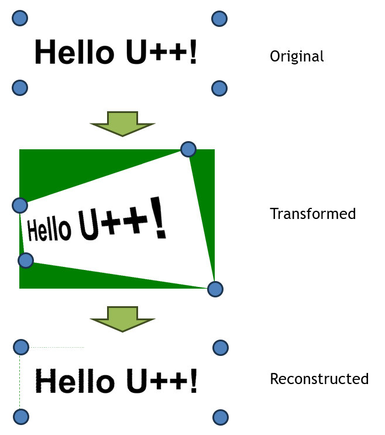

template <typename In, typename Q>
class Homography
Homography is a transformation that describes the motion between two images, when the camera or the observed object moves. Sometimes it is called Quad to quad transform.
Homography<In, Q>(const Point_<In>& from0, const Point_<In>& from1, const Point_<In>& from2, const Point_<In>& from3, const Point_<In>& to0, const Point_<In>& to1, const Point_<In>& to2, const Point_<In>& to3)
Construct an homography from points from0, from1, from2, from3 to points to0, to1, to2, to3.
Template class In refers to the input points, Q refers to the processing and output precision.
void Init(const Point_<In>& from0, const Point_<In>& from1, const Point_<In>& from2, const Point_<In>& from3, const Point_<In>& to0, const Point_<In>& to1, const Point_<In>& to2, const Point_<In>& to3)
Initialization function similar to the constructor.
Point_<Q> Transform(const Point_<In>& from)
Applies the transformation to point from.
Image ApplyHomography(const Image& orig, const Color& back, const Point& from0, const Point& from1, const Point& from2, const Point& from3, const Point& to0, const Point& to1, const Point& to2, const Point& to3)
Applies an homography to image orig, setting back color for unknown points, from points from0, from1, from2, from3 to points to0, to1, to2, to3.

|
{kind=link}